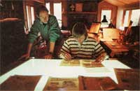

Jan Blum
By Sara Pacher
January/February 1988
CONVERSATIONS WITH MOTHER
A small seed company is saving a precious plant heritage.
Photographed by Phil Schofield
The southern Idaho mountains are brown in August. The wagon tracks of those who took the Oregon Trail west so many years ago are still visible as they tumble over an escarpment to the tree-lined waters of Moore's Creek near Boise. Clear blue skies contrast brightly with the barren hills as the dusty gravel road forks and forks again, bringing me to the entrance of a small, lush cove. Past the gate, a poppy-strewn path leads up a slight incline. On the left, a gushing little stream rushes down to the road. Climbing the hill on the right, colorful vegetables and fruit in pretty, complementary patterns peek through rich, green leaves of varying hues. Out of the gardens emerge two small, attractive buildings, where a wooden sign tells me I've indeed arrived at Seeds Blüm (pronounced "Bloom"), a sanctuary for heirloom seeds that otherwise might disappear from the planet.
Jan Blüm ushers me over herb-framed flagstones into a combination kitchen - dining room - office. The tantalizing scent of simmering beans replaces the flower-filled air outside. Blue glass jars of dried legumes and canned fruits and vegetables line the kitchen shelves. We take a quick tour of the gardens and buildings, where a staff of five other women is germinating seeds, filling orders and preparing to put out the 1988 edition of the six-year-old company's always delightful seed catalogue.
During this short tour, it becomes apparent to me that Jan Him has taken on a gargantuan task - that of preserving, judging, propagating and marketing millions of heirloom seeds, while efficiently managing a rapidly expanding business. We return to the kitchen, and - as Karla, Blüm's business partner and talented one-woman construction crew, efficiently prepares a bean burrito lunch - I ask Jan how she had dared to even begin this undertaking.
Blüm: I grew up in a central California farming community. Though my parents were professionals, they both grew up on farms. They always had a big garden, and my mother kept a fabulous lawn - not a weed in it. I remember in the second grade being thrilled at planting things, but basically, as a kid, I wasn't truly interested in gardening. I wanted to do something with my life, not spend it weeding a lawn. After all, a yard may look pretty, but when I died, who was going to care? I pretty much turned my back on that. I married a minister and did a lot of work with people.
Then, during the back-to-the-land movement in the early '70s, I was living in Phoenix and got this desire to move to the country-to the wilderness. Instead, we moved to Los Angeles, which was anything but! After a year there, we heard of a landowner in Idaho who was looking for a caretaker for his 600 acres with creek and pine trees. Who could turn that down? Eventually, we bought three acres and started building a house. So that's how we ended up here. It was a compromise. My husband liked university towns; I wanted to live in the wilderness. This was close enough to Boise for him and far enough out for me.
MOTHER: Was it all you expected?
Blüm: As I'm sure thousands of people have found out, there are huge psychological adjustments in moving from the city to the country, but I didn't know that at first. It took about a year before I said, this is for real, kiddo! So why are you here, and what are you going to do? It seemed logical to grow my own food.
At first, I gardened with a neighbor. Then I decided to raise a garden by myself, and it was a disaster. I wonder how people ever get past that first year or two of gardening. It looks so easy, and everything can go wrong. But I was intrigued by the fact that my neighbor got his plot to work, and I started paying close attention to what he was doing. Meanwhile, he was filling my head with how the old varieties were disappearing and how hybrids were making up more and more of our food supply. "Vegetables don't taste the same anymore," he said. Then he gave me the descendants of some seeds he had been given as a wedding present in the 1920s - which was probably the smartest thing he could have done, because I grew them and saw for myself how neat they were.
Also, I was teaching vegetarian cooking classes, and so many people would ask, "What do you eat?" To help explain, I filled glass jars with all kinds of grains and beans for displays around the classroom. I didn't dismiss vegetables, but grains and beans, being dry, were easier. It soon occurred to me that there must be hundreds of grain and bean varieties out there, so - in order to fill up my jars - I sought out people I could trade seeds with.
Sure enough, I got about 700 or 800 different kinds of beans and started growing them all on the hill out there, along with 300 or 400 different kinds of tomatoes-and I was a goner! I wondered, why don't I see these in the catalogues. Why aren't people buying these in the grocery stores? When this superbig sauce tomato is available, why do we mess around with these little dinky-dorf things? I couldn't understand it, so I sent off for all the seed catalogues. I would order seeds, grow them and think, now, this one, this one and this one were the good ones, and I would try to order them the next year, and - just as my neighbor said - they would have been replaced by hybrids.
"Anybody who grows 800 kinds of beans is destined to start a seed company."
Then I started reading about genetic erosion and all the politics that contribute to it. I wanted all those neat varieties that were being lost, and - since I'm a cause-oriented person - I started thinking, I've got to do something. I wrote people who were involved in saving old varieties - Kent Whealey, John Withee, Lawrence Hill in England - and offered to work for them for a year. I wrote to this fabulous farmer, Edward Lowden, up in Ontario, who introduced a lot of interesting varieties before he passed away. I thought I could learn a lot from some of these people and could do something for them at the same time. Without exception, they all wrote back and said, "Do something where you are. We don't need you, but you can do something." But what was I going to do?
Meanwhile, the local newspaper wrote an article about our garden, because it was beau tiful, and the piece got picked up by United Press and sent all over the country - which I didn't know until I started getting phone calls from people who wanted to trade some seeds with me. Then I went to work for Redwood City Seeds in California for a short stint. People there said, "You should start a seed company. Anybody who grows 800 kinds of beans and 400 kinds of tomatoes is destined to start a seed company. You're just not seeing it. You're blind."
"I'm not a botanist," I replied. "I don't like business. I want to garden, and if I start a seed company, I'll be running the business, not gardening." But the idea stayed with me. And no matter where I went, people loved the varieties I'd collected. It seemed that I could generate enthusiasm. I thought, maybe it's because I'm such a fanatic gardener. I do know what gardeners want. Maybe I know better than somebody who's a botanist or a business person.
So just for the heck of it, I decided to write a catalogue. I wasn't going to publish it; I was just going to write it, because I like to write, too. It took me three months, and I just played - had a blast! Halfway through, I knew I was going to start a seed company, and that it would become my passion. The idea brought everything together for me. I could make a difference. I could probably make a living doing it. I could give people something that was beautiful as well as meaningful, and I could save old varieties. I could bring my gardening and writing and cooking together.
MOTHER: When did you actually start Seeds Blüm?
Blüm: The winter of 1981-82.
MOTHER: And you lost your husband somewhere along the way?
Blüm: Actually, the very first year. I think when I started the business it just pointed out some of the weaknesses in our relationship. It was time to change, so we did. But we're still very good friends. After he left, I remem ber telling him, "I feel like a little tugboat bobbing up and down in the middle of the ocean, and all these big steamers are going by, and they don't even see me, much less the danger of waves they create. If I can just keep from capsizing, much less get to the other side, I'll feel good."
Now I realize I am a business woman at heart. I like turning people on to things - and that's salesmanship. On the other hand, I don't want Seeds Blüm to become monolithic. There are dangers either way.
MOTHER: Yet, you're expanding rapidly.
Blüm: Every year the business has tripled. I'm not sure why. We do have varieties unavailable anywhere else, but maybe it's because we work a lot with gardeners and a lot of garden-to-garden network programs. We aren't just a seed company. We're really a service company, and even though folks sometimes have to wait for letters, we eventually answer all our mail. People are very patient with us, and they send us seeds. It's like Christmas all year round! We've gotten most of our varieties from our customers - a fact that pleases me no end, because it means they trust us to keep the varieties going. We make a special effort to give them the opportunity to be our Seed Grower for that variety. After all, they've grown it for maybe 30 years, so they obviously can do it. If they're too elderly, too busy or don't have enough space, then they give us the go-ahead, and we give the seeds to another grower. We don't just take the seeds and say "thank you very much" and then go on our way.
MOTHER: How do you test the seeds you receive?
Blüm: Oftentimes they go out in the Trial Garden Program, which involves gardeners all over the country raising them. Then we have a network of Seed Guardians and a network of Seed Multipliers.
MOTHER: What do they do?
Blüm: Seed Guardians make a commitment to grow a certain variety year after year. Maybe a 74-year-old fellow in Massachusetts says, "I don't have the land or the energy to grow seeds for you, but I have this old bean variety. I'll register it with you as a Seed Guardian." As long as he's alive, he's going to grow that variety every year, so if anything happened to our seed stock or to our Seed Grower's supply, we can go back to this gentleman, and we can get a small supply to start all over again. And we try to have several Seed Guardians for each variety.
Basically, we're doing the work that the National Seed Storage Lab in Colorado can't get the funding to do. They've done a good job with the limited amount of money they have, but they have a terrible time growing out all of the varieties that they have in storage. After 17 years, some varieties are still in storage. We, however, are creating a back yard seed bank all across the country which consists of people who are growing varieties out every single year. It's slow work. It's not going to happen overnight, but it's very exciting that it's happening at all. And it's happening more and more as people are realizing they can make a difference. They can feel comfortable growing one variety every year and keeping it pure.
It's not a whole lot of work, and it's a huge contribution, because if you get 30,000 people, that's 30,000 varieties.
Of course, sometimes we receive such a small sample of a seed that we don't have enough to put in the Trial Garden Program. When that happens, we send it to a Seed Multiplier, who will increase it, so that we can send it out to, say, 50 people in different parts of the country. They can test it, and we can listen to what they say. We do a lot of trials in our gardens, too. I'm currently looking for a full-time gardener, and if we find the right person, we'll do massive trials here.
MOTHER: What kind of business arrangement do you make with Seed Multipliers, Seed Guardians and your other associates?
Blüm: The Guardians and Multipliers consider their work a contribution to the cause. The Seed Growers are paid the very most we can afford. We still buy from some commercial seed houses, which is by far the cheapest way to go. In fact, we'd do much better financially if we bought everything from commercial seed houses and just acted as a repackager - which is what the majority of small seed companies do. When we don't have enough growers and have to buy seeds commercially, we try to choose a company that we feel comfortable with. We're working toward a 100% grower network, but in the meantime, we prioritize the varieties that are most important.
MOTHER: How do you decide that?
Blüm: We pick the heirloom varieties that you can't get anymore and that are in danger of extinction. They can't sit around for 10 years waiting for us to get the whole thing covered, because in 10 years they're not going to be here. That's our first priority. Our second priority is to find a grower who wants to take on a variety. Because we have so many small growers, we try to find a vegetable that they like to eat. That way, they might harvest half the row for their own use, and let the other half go to seed. So when we found a grower who, for example, loves the Scarlet Keeper carrot, which is not available commercially anymore, we asked him to grow that variety for us.
MOTHER: Is it just a coincidence that you have all female employees?
Blüm: Partly. I asked a fellow to come be our gardener at one point. In fact, we tried out a couple of guys. However, I like to see women doing things they want to do, and I'm really proud of the fact that we, as women, can be doing this so successfully.
We are, for example, international now. Our catalogue goes not only all over this country and Canada, but also to places like England, Ireland, Australia and Denmark. We get letters that say, "I hope you know that I got only two hours of sleep last night because your catalogue came in the mail yesterday." It's really fun to get that kind of feedback. How can I make the catalogue soberer when people say things like that? Anything can be work or fun according to your attitude. Whether I'm selecting seeds or raising a garden, fun is what I want, and I assume a lot of other people do too.
MOTHER: You mentioned that your first garden was a disaster. What were some of the mistakes you made?
Blüm: I didn't thin. I didn't weed soon enough. I thought you had to wait, for goodness sakes, until you could really see the weeds. I'd let them get big, and then something would happen. Maybe I wanted to go water-skiing that weekend. I didn't realize that you have to get those weeds out of there! Now we weed three times during the summer, and that's basically it. By weeding real early in the season, you don't have to work so hard again. I didn't know that, so things got overcrowded.
"We weed three times during the summer, and that's it."
But - beyond the varieties, beyond the climate, beyond everything that you can do-healthy soil is the basis. If you get disease problems or whatever, it's probably because you're not feeding your plants right - or even planting them at the right time. You can't do anything more important than planting when it's time and building the soil. We now understand that we are a combination of what we eat and how we exercise. That idea just hasn't moved out into the the garden yet, and plants can't jog. We have to do so many things for them.
Here, for example, most of the soil is decomposed granite, so we've had to build our own earth: a lot of leaves, a lot of manure and a lot of old, old, old sawdust for organic matter. And then I put moss in the soil. You saw the compost piles; I've used everything that I could get my hands on.
One of the biggest seed-saving mistakes I made early on was I wouldn't limit myself. I wanted to grow everything. Even though I didn't know how to protect my seeds against cross-pollination, I'd plant five different kinds of carrots. I'd end up with five varieties all going to flower at the same time, none of which I could save because they were all crossing madly. If I'd been smart about it, I would have grown one, and I would have had one. As it was, I had none. I still struggle with that.
Actually, I'm very fortunate. Different people have different abilities, and gardening seems to be a natural for me.
MOTHER: What do you consider to be your biggest challenge?
Blüm: For one thing, half the heirlooms I work with have never been commercially available. They are varieties that came over from the Old Country. Others have been available commercially, but nobody knows their names - they've been totally lost. I have to do an incredible amount of research to find out if they really are such-and-such a variety or not. That's a real problem in this whole movement. Then there are numerous varieties that have been available in commerce, but there's very little information about them. I can see what the old catalogues said about them, which may be right on the nose or may be hype. Then I have to find out how they perform in different regions, when they were introduced and what the stories behind them are. Are they known by different names in different parts of the country? Could I end up selling the same thing five times under five different names? You can only find out by growing them.
"There's never been a vegetable botanical garden. I want to do that."
I fight some misunderstandings with gardeners, too, because they want very badly for us to specify days to maturity. I want to do that, but a gardener, looking at different catalogues, might choose a Black Magic zucchini that says 48 days to maturity instead of a Black Magic that says 57 days, thinking it will be an earlier variety. Well, that's baloney. It's the same variety. It's just that for one seed company it matured in 48 days, and for another seed company in another area it matured in 57 days. So there's some education involved in my job, too.
MOTHER: What are some of the major misunderstandings surrounding heirloom vegetables?
Blüm: People think heirlooms are less productive, but - whether you're dealing with hybrids, with heirlooms or with French, Italian or Mexican vegetables - some are going to be grown for their superior flavor even if they're not terribly productive. Others will produce bushels and bushels. Different kinds of plants do different things. A lot of hybrids perform poorly; a lot produce very well.
For the last 50 years, big seed companies have dumped tons of money into advertising hybrids - and hybrids definitely have their place. But I think when someone hybridizes a vegetable, he or she should stabilize it, so people can save seeds from it. There are a tremendous number of varieties that we now consider open-pollinated varieties that came to us through crossing two parent plants, and they've become stabilized. I do object to the proprietary hybrids that result when a seed company keeps secret the two parents and releases just the F-1 hybrid; any seed after that is going to be terribly unstable. You can't save the seeds, and that's definitely a means of control.
There's also the idea that heirlooms are more disease-prone. That's just untrue. Some heirlooms have disease problems. Some hybrids have disease problems in certain parts of the country. I can grow a cucumber here that can't be grown in the Midwest because of blights. On the other hand, I don't bother growing the White Wonder cucumber here, because I don't think it's near the quality of some others, but Midwesterners grow it because it's very resistant to a lot of the diseases they have there. That's a good example of an heirloom that's perceived differently in different parts of the country and for different reasons.
Don't forget that when a plant breeder tries to put disease resistance in a hybrid, he or she has to go to an open-pollinated plant to get that resistance. It's a total misconception to think that all heirlooms or all open-pollinated plants are less disease-resistant than hybrids. For instance, in a trial of 118 varieties, the old-time Golden Gopher muskmelon was the only one that was blight-resistant.
"Maybe because I'm a fanatic gardener, I know what gardeners want."
But gardeners, new ones especially, should realize that - because there's so little information about heirlooms - growing them has to be thought of as an experiment. We don't have the back-up of all the county extension agents. We don't have 50 years of compiled records like the big seed companies. We can point out some varieties that we know will work well in certain areas of the country. If a variety doesn't work, a grower should try something else, because it's not the variety itself that isn't any good. It may be that it just doesn't work in that area or the weather wasn't right that season. Yet, I've followed some varieties that have been grown for 80 years in Minnesota, and then we have Florida gardeners that grow them with no problems.
I think I've got some incredible varieties. I love them and expect more out of them. Then, as with family, when I don't succeed with one, I'm bitterly disappointed. A gardener has to get over that stage and realize that if a variety doesn't work, it's best to try something else or try the same thing again another year.
This year, we had a real problem with a couple of watermelon varieties we were hoping to introduce, and the crops failed. The growers were really disappointed. I said, "But look how many hundreds of varieties are doing really well, and look at all the exciting ones we're able to introduce."
What makes an heirloom so exciting is that it connects the past with the future. I know that Ragged Jack kale has been around for over a hundred years, and it's probably been around for thousands of years before that. Every time I see it I think about the person in England who sent it to me, and about the fact that it's now being served in salads in California's gourmet restaurants. I think about how it's gone all those miles and through all those cultural changes. That's exciting to me.
MOTHER: What do you want to accomplish in the next five years?
Blüm: A lot. A couple of years ago at a national seed conference, Garrison Wilkes gave a talk in which he said something like, "I used to be known as the champion of cryogenics and frozen cells. I thought that was the way to preserve genetics. But I've changed my mind. Now I think the answer is to instill in our culture the value of these things. People save what they value."
For some reason, that thought just burned into me. For example, when I see Ragged Jack kale in California salads, that means Ragged Jack kale is going to be around for a long time, because now it's valued. It's made me realize that our job is to translate. We get the old varieties, and we show people why they want them. The things that I want to accomplish relate to that.
"Heirloom vegetables are exciting links between the past and the future."
For example, there's our garden network, where we have not only the Seed Growers Program and the Multipliers and Guardians, but also the Trial Garden Program, in which people from all over the country try out the varieties - not only new ones, but the ones in the catalogue, too, because we sometimes know that they perform well in eight states, but we don't know what they'll do in Florida or Baia California. From the Trial Garden Program, we compile all that information and print it.
Then we have the Gardener's Choice Program, in which we do more scientific garden research. Say an experienced gardener is committed to Better Boy tomatoes-they're his favorite. We send him a challenger. He grows the two varieties side by side - same soil, same weather, same everything - and compares the results. In the process, we gain a lot of information about both varieties and, over the years, about what gardeners prefer and why. So we're trying to do basic research to help meet gardeners' needs.
Then there's Grassroots Garden Research. In it, people research the kinds of problems gardeners have. Maybe they want to know the best varieties to grow in window boxes. Or maybe how to keep raccoons out of the sweet corn.
We've also started an Area Advisor Program. The Advisors are like county extension agents, but they're not strictly pro-hybrid guys. They're people in different areas that can give advice. You see, inexperienced gardeners read our catalogue and get very enthusiastic. They write and say, "I've just moved to San Antonio, and this is my first garden." They draw out the plot. They show us where the beds are and where the shade comes at noon. And they want us to recommend what will do well there. Well, I can do some of it, but I can't tell everybody from Vermont to Florida where to put what and when. So we try to draw on experienced gardeners in the area - and I like that anyway, because it's working with people who really know more than I do about their particular areas. We're coordinating that program. This is the first year we're going to list the advisors in the catalogue. It's starting small, like everything else. We don't have an advisor for every microclimate of the United States, but I think we'll have more and more people who will say, "I could do that in my area," and who will write to us. Area advisors also do trials for their microclimates.
"We try to convince experience gardeners to advice others."
What we're doing is coordinating gardeners. People gather the information, and we try to get it back out to the people who want to know it. We're starting a newsletter for this purpose, which we'll send free as a reward to the people who do the work. Maybe someday we'll be able to pay people to be Area Advisors. I don't know how it will unfold. Right now, everybody's just being a good sport and chipping in for a while -just trying to get the information out fast.
MOTHER: Why the rush?
Blüm: What happens is, new gardeners try out a variety that doesn't do well in their area, and they think, forget heirlooms. Maybe they'll try a hybrid the next year that does better across a broad spectrum of the country. They'll be more successful with it, and then they'll think heirlooms are crummy. And it's not true. There may be an heirloom that far out-performs the hybrid that they just tried, but they didn't know about it. So we're trying to get the information together to offer that kind of support to people. We can see what needs to be done, and what we have to work with. It's a huge challenge.
MOTHER: Enough to keep you busy, I would think.
Blüm: But there's more! For example, there's never been a botanical garden for vegetables. Arboretums save trees from all over the world, and it's wonderful because you can go there and pick out the tree that you want for your own yard. No one has ever done that with vegetables. I want to do it.
MOTHER: That would be fabulous - particularly if you could have them in the different regions of the country where people could see what does best in their area.
Blüm: Exactly. Agricultural experiment stations should be doing those things - and they do, sort of. But it's the big seed companies that send them varieties. A couple of years ago, I asked if I could send varieties to different experimental stations to see how they would perform, but they would only test those that were of commercial value - meaning valuable to large commercial cus tomers, not to gardeners. But gardeners are a concern. So far, they've been totally neglected - so I hope to remedy that situation.
"I want to trace the routes of vegetables across the centuries."
There could also be spring festivals at the botanical vegetable gardens where people could buy varieties they couldn't get at local nurseries. In the fall, there could be harvest festivals with, for example, all the different kinds of pumpkins. If you could see the diversity of pumpkins that really exists, Halloween would never be the same again. There are just so many neat varieties that aren't being seen.
In addition, I want to create a museum that relates the history of agriculture. And I don't want to be sponsored, because the history of agriculture has been influenced too much by the chemical companies of America. They subsidize all the agricultural education, so that the real story only gets told occasionally in a book here or there. I want to explain why heirlooms have gotten to where they are - the whole genetic story. I want to trace the routes vegetables have taken throughout the centuries.
In this country, for example, we've gone from no seed companies at all to almost 100% reliance on them. And now that genetic engineering has become such a big thing, the petroleum companies have bought seed companies with people in place to do breeding and genetic engineering. But what breeding has been done is always for companies like Nabisco and Campbell's Soup. Those are important projects that should be done, but there's not any breeding done to speak of for back yard gardeners. Therefore, emphasis on flavor has been supplanted by the desire to be able to harvest and ship them easily. I want to trace all that, so people will understand and not feel so helpless. Right now, they don't understand what happened or why it happened, and they don't understand how it can be changed, and who can do what.
And I want this museum to be in the same place as the first botanical vegetable garden - a kind of Smithsonian of back yard agriculture. I've got great plans. Now all I need is a little help.
The Seeds Blüm Catalogue is available for $2 from Seeds Blüm, Idaho City Stage, Boise, ID 83706. And, for more information on growing rare or unusual vegetables,turn to Of Daikons and Dinosaurs .
 Seeds Bl?m puts out a catalogue chock-full of humorous line drawings, fine recipes, reviews of helpful books, gardening advice and rare vegetable varieties. |
 Whether Jan Bl?m is selecting seeds or raising a garden, fun is what she wants? and she assumes that other gardeners want that too. |
|
|
|
|
|